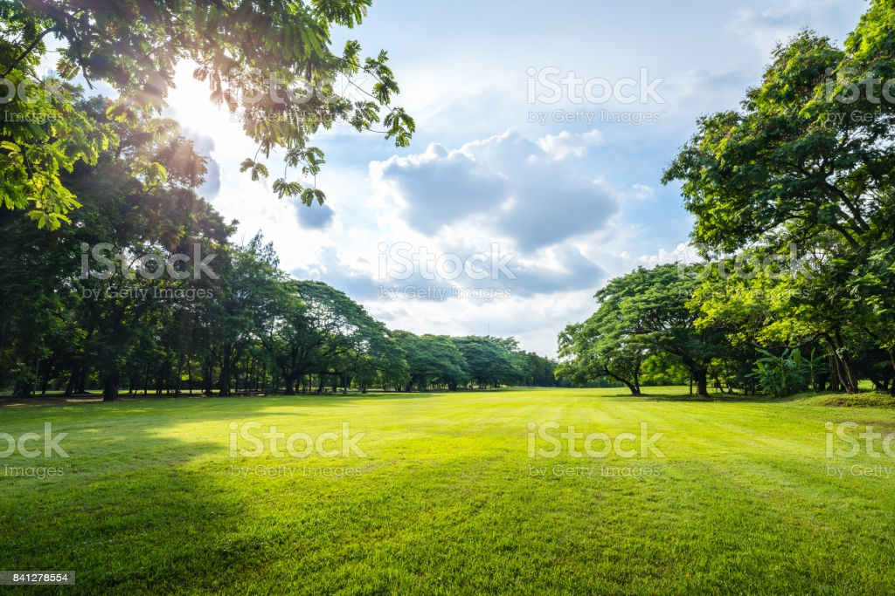

One knows all this has been said before in different ways, but we don’t seem to pay much attention. Is it that we are so caught up in our own network of problems, our desires, our urges of pleasure and pain that we never look around, never watch the moon? Watch it. Watch with all your eyes and ears, your sense of smell. Watch. Look as though you are looking for the first time. If you can do that, you see for the first time that tree, bush or blade of grass. Then you can see your teacher, your mother or father, your brother or sister, for the first time. There is an extraordinary feeling about that: the wonder, the strangeness, the miracle of a fresh morning that has never been before and never will be.It underpins our economy, our society, indeed our very existence. Our forests, rivers, oceans and soils provide us with the food we eat, the air we breathe, the water we irrigate our crops with. We also rely on them for numerous other goods and services we depend on for our health, happiness and prosperity.Earth is the only planet known to support life, and its natural features are the subject of many fields of scientific research. Within the Solar System, it is third closest to the Sun; it is the largest terrestrial planet and the fifth largest overall. Nature can help provide ideas to all the problems you face. That's because nature can improve our brains abilities, boosting memory performance and attention span by around 20% with just an hour spent outside.Be in communion with nature, not verbally caught in the description of it, but be a part of it, be aware, feel that you belong to all that, be able to have love for all that, to admire a deer, the lizard on the wall, that broken branch lying on the ground.Nature is the ant, the bee and all the living things of the earth. Nature is the river, not a particular river, whether the Ganga, the Thames or the Mississippi. Nature is those mountains, snow-clad, with dark blue valleys and range of hills meeting the sea. The universe is part of nature.
